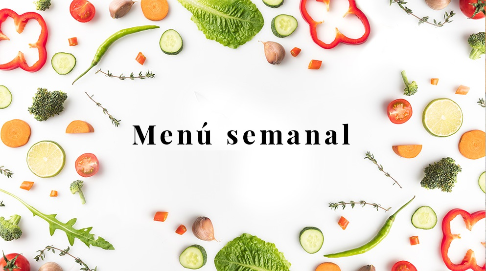

Algunas opciones

| Desayuno | Almuerzo | Merienda | Cena | |
|---|---|---|---|---|
| Lunes | Infusión con tostadas | Spaguettis con albóndigas | Yogur con fruta | Nuggets de pollo y verdura con arroz |
| Martes | Leche con cereales | Pollo a la mostaza con papas al horno | Jugo de naranja con tostadas | Tarta de atún |
| Miércoles | Infusión con bizcochos | Patel de papas | Yogur con cereales | Canastitas de calabaza y ricotta |
| Jueves | Infusión con pan con queso | Arroz al curry | Infusión con tostadas | Tomates rellenos |
| Viernes | Yogur con cereales | Fideos con brócoli | Infusión con grisines | Wrap de pollo y verduras |
| Sábado | Infusión con tostadas | Tallarines a la marinera con verduras asadas | Licuado de frutas | Pizza con cebollas caramelizadas |
| Domingo | Jugo de naranja con tostado mixto | Cuadril a la barbacoa con ensalada | Infusión con galletitas | Empanadas de jamón y queso, humita y/o cebolla |